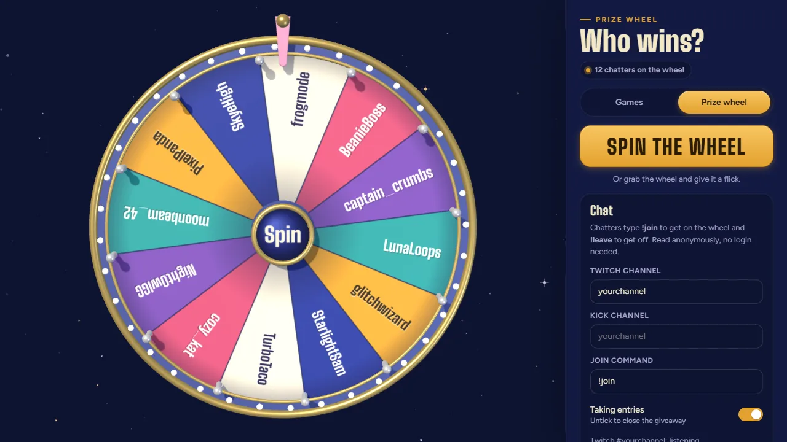

Game Wheel
Can't decide what to play? Load the wheel with your games, give it a spin in front of chat, and let
fate pick. "Tonight we're playing…" — no take-backs. Or flip it to Prize wheel: chatters type
!join, you spin, and someone wins. Watch out for surprise visitors drifting past.

The prize wheel with its control panel open, filled with chatters who typed !join. On
stream you can hide the panel and make the background transparent so only the wheel shows.
Setup guide
Put it on stream
-
Add a Browser source
In OBS click + under Sources → Browser. Paste
https://wheel.ixitxachitl.com/and set it to1920×1080. - Open it with Interact Right-click the source → Interact. You'll see the wheel and its control panel.
- Add your games Type your games into Games on the wheel, one per line, and press Update wheel.
- Make it stream-ready Tick Transparent background (or press T) and Hide controls (or press H). Now only the wheel shows on stream.
- Spin! In the Interact window, click or drag the wheel, or press Space. When it stops you get a "Tonight we're playing…" card.
Keyboard shortcuts
| Key | Does |
|---|---|
| Space | Spin the wheel |
| H | Hide / show the control panel (stream view) |
| T | Transparent background on / off |
| E | Send a surprise visitor across the screen now |
| Esc | Close the winner card |
Shortcuts work while the wheel's window has focus. In OBS that means inside the Interact window.
After the spin
- Remove and close takes the winner off the wheel, so it can't come up again. On the prize wheel that's how you hand out a second prize: remove the winner, spin again.
- Spin again if chat demands a re-roll.
- Close keeps the game on the wheel for next time.
- Every pick is saved under Recent picks in the control panel.
Prize wheel
Giveaways from chat
- Switch to Prize wheel At the top of the control panel pick Prize wheel. Your games list is kept safe for when you switch back.
- Type your channel Under Chat, enter your Twitch and/or Kick channel name. Chat is read anonymously, so there's no login, bot account or app to authorize.
-
Open entries
Leave Taking entries ticked and tell chat to type
!join. Each name lands on the wheel as its own slice; the count at the top keeps score. - Close entries and spin Untick Taking entries when you're ready (or don't, and let latecomers in), then spin. "And the winner is…"
- More prizes? Remove and close takes the winner off the wheel. Spin again for the next one. When the giveaway is over, Clear entries empties the wheel for next time.
!enter or !raffle.
What chat can type
| Command | Does |
|---|---|
!join | Puts them on the wheel (once; a second !join does nothing) |
!leave | Takes them off again |
Someone who gets timed out or banned while entries are open is taken off the wheel too. Joins that arrive mid-spin wait until the wheel has stopped and the winner card is closed.
Good to know
- Entries, your channel and the winners list are saved in that browser source, so an OBS restart doesn't lose them.
- Add names by hand, too: type them into Chatters on the wheel and press Update wheel. Anyone who joins from chat while you're typing is kept.
- Lots of entries? The wheel takes hundreds of names; the slices just get thinner. The winner card always shows the name big.
-
From Streamer.bot or another tool:
window.gameWheel.join("name"),.leave("name"),.spin()and.mode("prize").
More tricks
Control panel extras
- Tick sounds play while the wheel spins. Untick it for a silent wheel.
- Surprise visitors turns the little friends drifting past on or off.
- Shuffle mixes up where the games sit on the wheel.
- Reset puts the starting games list back (it asks first). On the prize wheel the same button is Clear entries.
- Hid the controls and can't find them? Press H, or click the Show controls button.
Questions
What are the surprise visitors?
Every so often a little friend (an astronaut cat, a UFO, a bunny and more) drifts across the screen. Click one for hearts, or press E to call one in right away. Don't want them? Switch off Surprise visitors under Options. E still works.
Do I need to log in for the prize wheel?
No. Just type the channel name. Chat is read the same way a lurker reads it, so there's no login, no bot account and nothing to authorize. Twitch and Kick are supported.
Can I spin it from my normal browser instead?
Yes. Open the wheel in your browser and add it to OBS with a Window Capture. The transparent background only works as a browser source, though, so you'll see the starry sky.
My games list is different in OBS and in my browser
That's expected. Each browser keeps its own saved list, and OBS counts as its own browser. Set up the copy you actually show on stream.